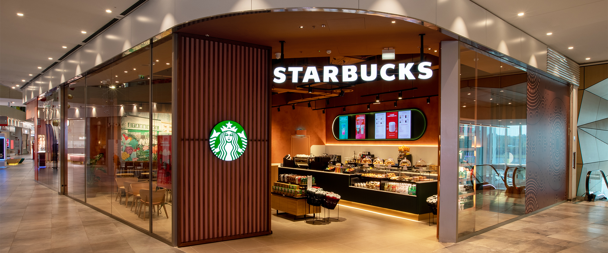
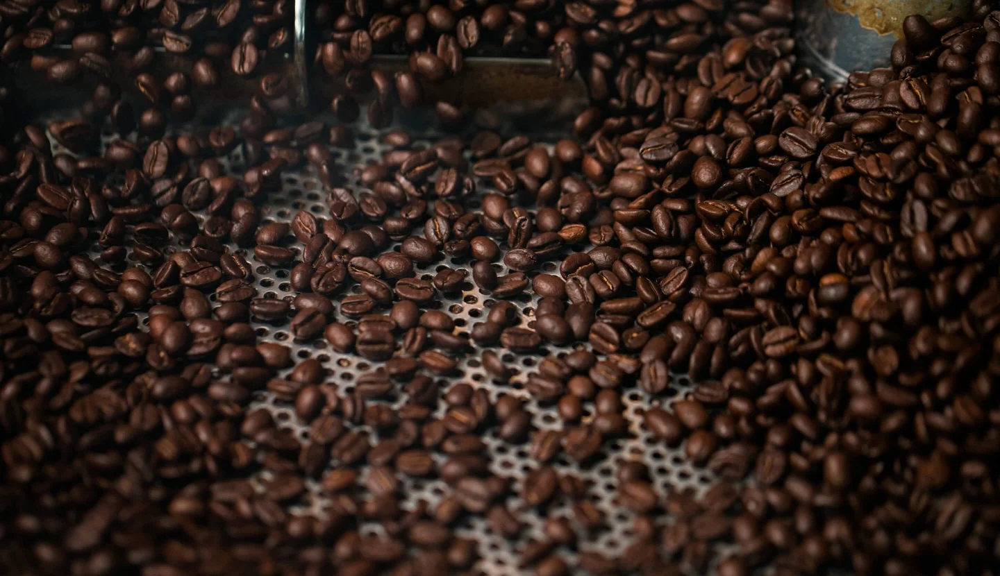

Il caffe Starbucks.
Preparalo a casa come piace a te.
Un gusto unico come quello a casa. Scopri i nostri caffè Starbucks da
poter prepare comodamente a casa tua.
Goditi una tazza di caffè 100% Arabica o una bevanda Starbucks, quando
e come vuoi.

i nostri caffè
Hai trovato il tuo caffè Starbucks® preferito da preparare a casa? Perché non conoscere di più il mondo del caffè? Bevi un caffè e goditi i nostri articoli sul viaggio del caffè, la sostenibilità e lo stile di vita.